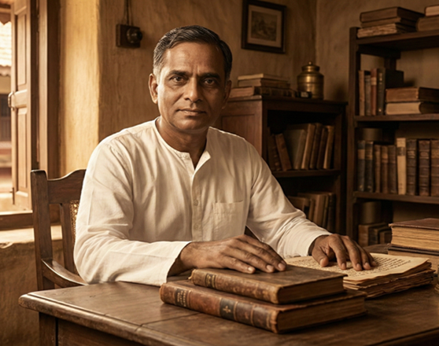
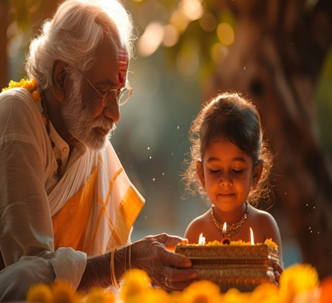

Our Story & History
-
Sri Ramakrishna Kudil is a hoary institution situated in a sylvan setting on the southern bank of the sacred River Cauvery, near Thirupparaithurai (Trichy District). Established in 1949, the Kudil was registered as a society with the noble aim of pragmatically serving poor orphans and children who have lost one parent.
-
What began in a humble mango grove with the divine grace of Bhagavan Sri Ramakrishna has grown into a sanctuary of education and character building. The institution has steadily evolved through important milestones that shaped its Gurukulam tradition:
1949 – Established by Brahmachari Ramaswamy.
1954 – Sri Ramakrishna Gurukulam was established with just five children.
1955 – An Elementary School was opened, followed later by a High School. -
For over 75 years, the Kudil has followed the path of great souls such as Sri Ramakrishna, Holy Mother Saradha Devi, Swami Vivekananda, Mahatma Gandhi, and Acharya Vinobaji. The institution functions without discrimination of caste, creed, race, or religion, firmly believing that the poor are the living embodiment of God.
The Founder: Brahmachari Ramaswamy
-
The Kudil was founded by the visionary Brahmachari Ramaswamy. A man of immense dedication, he established the Kudil to not only provide basic education to destitute boys but to train them to stand on their own legs as ideal citizens.
-
Under his guidance, the institution achieved a unique status of financial self-sufficiency for over forty years. He instilled the values of “Work is Worship”, ensuring that the Kudil functioned on the principles of self-help, discipline, and dignity of labour, without constant dependence on external aid.
-
Living a life of simplicity and renunciation, Brahmachari Ramaswamy led by personal example. He believed that true education must shape character as much as intellect, and he nurtured generations of children with compassion, discipline, and spiritual grounding. His selfless service, humility, and unwavering faith continue to inspire the philosophy and daily life of Sri Ramakrishna Kudil long after his passing in 1999.

Administration & Leadership
-
The administration of Sri Ramakrishna Kudil is unique in that it is led by home-grown Brahmacharis—individuals who were raised and educated within the Kudil itself and later chose to dedicate their lives to its service without any monetary compensation.
-
The leadership of the institution has been carried forward through devoted service across generations:
Founder – Brahmachari Ramaswamy (served until 1999).
Successor – Brahmachari Durai (served from 1999 to 2016).
Current Head – . -
A graduate and a home-grown disciple, Brahmachari Karuppaiah currently heads the institution with dedication and integrity. Under his efficient leadership, Sri Ramakrishna Kudil continues to face modern challenges while remaining firmly rooted in its founding values. Over the years, the Kudil has also been supported by distinguished patrons such as Late Sri. R. S. Malaiappan, IAS, Justice Maharajan, and Sri Thirumuruga Kirupananda Warriyar, along with visits and support from national leaders including Pandit Jawaharlal Nehru, Smt. Indira Gandhi, and former Chief Ministers of Tamil Nadu such as K. Kamaraj, C. N. Annadurai, Dr. M. G. Ramachandran, and Dr. M. Karunanidhi.
Life at The Kudil: The Gurukulam System
-
Education: Sri Ramakrishna Kudil provides formal education from 1st to 10th Standard following the State Board curriculum. At present, around 350 students receive free education in an environment that emphasizes discipline, values, and academic growth.
-
Technical Training: After completing school education, students are sponsored for higher learning in Industrial Training Institutes (ITI) and Polytechnic Colleges. This ensures that every child leaves the Kudil equipped with practical, employable skills to earn an honest livelihood.
-
Self-Reliance: In line with the Gandhian principle of self-sufficiency, students actively manage the daily operations of the Ashram. From cooking in the modern hygienic kitchen and maintaining the 70-acre coconut grove to cleaning the campus and performing poojas, the boys learn dignity of labour through practice.
-
Holistic Growth: Equal importance is given to physical and mental well-being through sports, agriculture, and dairy management, including the care of the Kudil’s herd of cows. This balanced approach nurtures healthy bodies, disciplined minds, and compassionate hearts.
